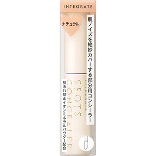
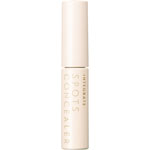

返回列表
产品名称：インテグレート スポッツコンシーラー 2 ナチュラル

資生堂 インテグレート スポッツコンシーラー 2 ナチュラル －
メーカー 資生堂
JANコード 4901872024308
商品の特徴
肌ノイズを絶妙カバーする部分用コンシーラー
肌あれ防止イオンミネラルパウダー配合
成分・分量
-
用法及び用量
＜使用方法＞
●ファンデーションの前に、チップで直接、肌に塗布し、指で軽くトントンとたたきこむように肌になじませます。
●使用量が少ないと、十分な紫外線防御効果が得られません。
●紫外線防御効果のある化粧下地との併用をおすすめします。